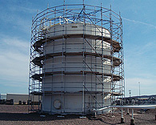
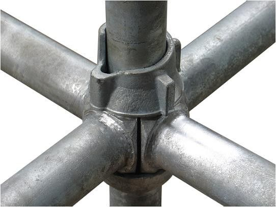
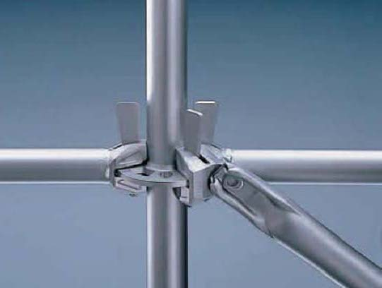

Scaffolding Systems
Columbia 's core business is renting scaffold material to specialty contractors and to Industrial facilities in the Texas and the southeast region of the United States.
Columbia also has an excellent work force of experienced scaffold builders to provide labor and equipment to meet our customers’ expectations. By remaining a small to medium sized scaffolding company, and not developing into the biggest company with the most employees in various locations, Columbia Scaffolding Services LTD can offer customers a mission that focuses on one thing, to provide services at top speed.
Cuplok Systems Scaffolding
- Highest rigidity system; a proven positive connection
- Maximum opportunity to comply with safety policy of 100% tie-off
- Low maintenance
- Efficient: least amount of scaffold parts and pieces required to build scaffold
- Design flexibility 0 to 360 degree, accommodating and radius or curve.
- No starter collar required.
Pinlock Systems Scaffolding
- Unique connector technology allows up to 8 connections on each rosette
- Wide range of sizes – promotes versatility with any application
- Quick to assemble, reducing downtime
- Preferred by a majority users in the scaffold industry